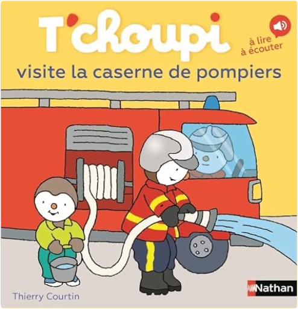

Julien
Collection Total:
2 100 Items
Last Updated:
Feb 15, 2025
Shelf:
Books
Movies
Albums
Videogames
Games
BD
BD Camille
Blu-ray
Business
Camille
Comics
Cooking
Lego
Manga
Pauline
Photography
Sport
Star Wars
T'choupi
Travel
TV Shows
Un livre dont vous êtes le héro
Vinyl
Walt Disney
4
5
6
7
8

T'choupi, tome 80 : visite la caserne des pompiers
Thierry Courtin
209501829X
T'choupi, tome 81 : part à l'aventure
Thierry Courtin
2095018303
T'choupi, tome 82 : a un nouveau copain
Thierry Courtin
2095014685
T'choupi, tome 83 : dort chez un copain
Thierry Courtin
2095029291
T'choupi, tome 84 : va à la fête foraine
Thierry Courtin
2095029305
T'choupi, tome 85 : visite Paris
Thierry Courtin
2095034007
4
5
6
7
8

 Made with Delicious Library
Made with Delicious Library